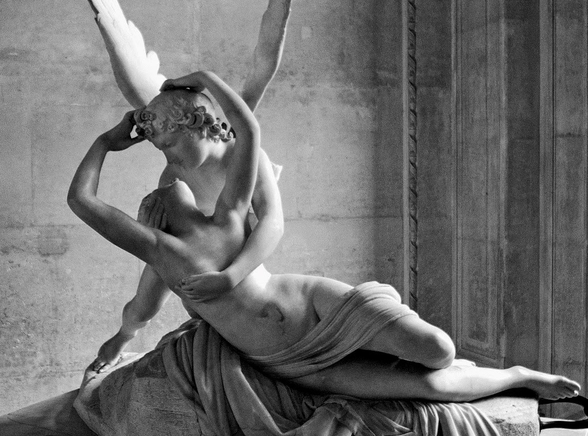

|  |
Descripción de la obra
|
|
|
Canova representó en esta escultura el momento en el que Eros reanima de su sueño a Psique mediante un beso después de haberla llevado a su palacio. La obra es fundamentalmente de lectura frontal, aunque su tridimensionalidad no fue descuidada, pero definitivamente debía ser vista desde el ángulo que aquí se presenta en la fotografía. La composición es de un gran dinamismo y está concebida por medio de cuatro aspas o ejes rectores marcados dos de ellos por las alas de Eros y los otros dos por los cuerpos de las figuras. El centro al que confluyen los cuatro vectores está constituido por las dos cabezas que se encuentran frente a frente después del beso. La joven Psique se reanima y despierta de su sueño viendo con los ojos entrecerrados el rostro arrobado de Eros, que la sostiene con extrema delicadeza por debajo del pecho. El cuerpo de Psique, de gran voluptuosidad, se percibe como moviéndose lentamente, adelantando su pierna izquierda sobre la derecha que está extendida. Un terso manto, de pliegues suaves rodea su cuerpo y cubre su sexo, siguiendo los cánones del pudor imperante en la época, en los cuales no se mostraban los genitales de los sujetos representados. La postura relajada y ligeramente curva del cuerpo de Psique marca un evidente contrapunto con la tirantez del cuerpo y las alas de Eros, el cual se percibe como si estuviera sujeto de una gran tensión, tal vez porque le embarga la incertidumbre sobre cómo reaccionará su amada ante el beso que le ha dado. Ambas figuras se posan sobre una base carente de forma conocida, la cual tiene la función de elevar los cuerpos para destacar la composición. Canova era un detallista y tuvo la delicadeza de tallar en el mármol todos los elementos que son propios de los cuerpos hasta el último fragmento, inclusive cada una de las plumas de las alas de Eros, con todo y sus hebras. El acabado final se lo dio a base de un pulimiento con polvo de mármol para lograr así una gran tersura en todas las superficies. El tamaño de esta obra es casi de una escala real, con un ancho de alrededor de 1.50 metros. El resultado es una escultura de una gran calidad de factura, además de poseer unas innegables dotes estéticas, muy acordes con el neoclasicismo de la segunda parte del siglo XVIII, del cual se considera a Canova como su mejor escultor. Pero más allá de sus cualidades formales y técnicas, esta obra refleja una profunda humanidad, representada por la ternura de ambos protagonistas, enlazados en un momento mágico de amor supremo y carnal. No es un amor metafísico, inmaterial e idealizado, es un amor que se hace patente en los dos cuerpos de los jóvenes, el uno arrebatado por una tierna pasión y la otra, lánguida y abandonada, en abierta entrega. Por ello, esta obra es una de las más célebres de este escultor italiano, padre del academicismo neoclásico que por otra parte dedicó la vastedad de su trabajo a representar los valores más caros al ideal de su tiempo: la ilustración. |
||